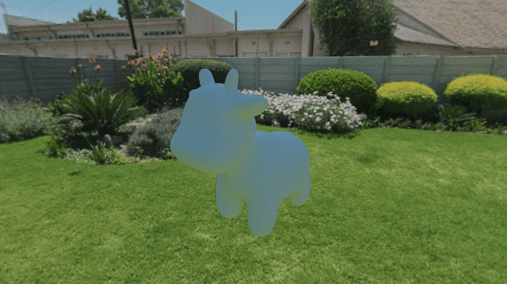
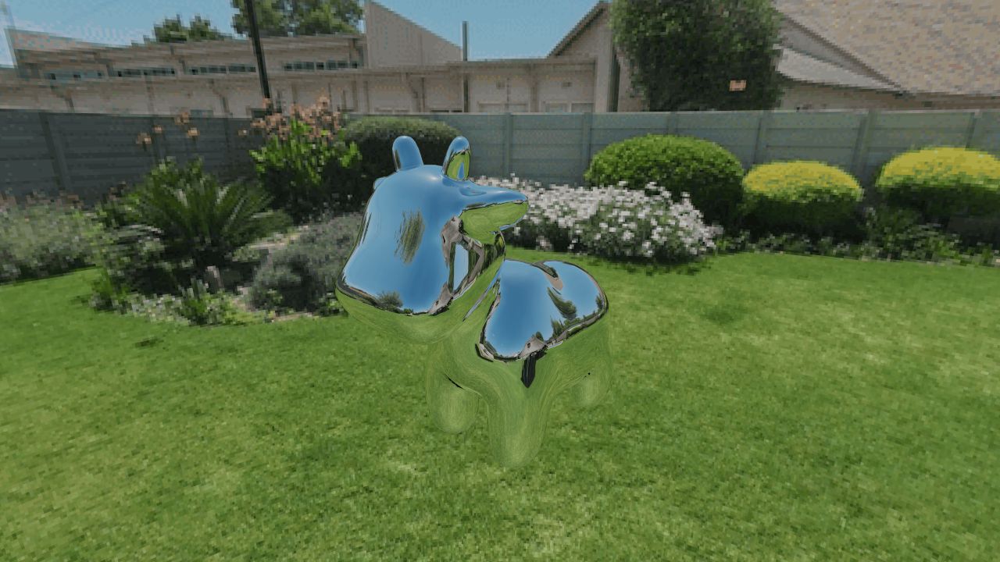

**Assignment 3 Report**
AndrewID: jerrywa2
(##) About this template
* You can view your writeup by opening it in a browser - right click this file and open with your browser of choice.
* Replace reference images with your own screenshots or renders when applicable.
* Include descriptions of any encountered problems and the time you spent on each task.
(##) A3T1 CHECKPOINT
You do not need any screenshots for this task.
Your completion will be graded based on the reference `test.a3.task1.cpp` file and
checking that camera rays properly fill up the camera view frustrum.
(##) A3T2 CHECKPOINT
You do not need any screenshots for this task.
Your completion will be graded based on the reference `test.a3.task2.*.cpp` files and
checking that rendering spheres and triangles works properly.
(##) A3T3 CHECKPOINT
You do not need any screenshots for this task.
Your completion will be graded based on the reference `test.a3.task3.*.cpp` files and
checking that the generated BVH looks reasonable and rendering large meshes is fast and correct.
(##) GenAI Use CHECKPOINT
Which model(s) did you use (e.g., ChatGPT-4, Claude-2, etc.)?
Claude Sonnet 4.6
For what purpose(s) did you use GenAI (e.g., brainstorming, code generation, debugging, etc.)?
I only used it for task 3, where it helped me structure my code and debug in many areas
What was it good at? What was it bad at?
It was good at sorting out the logic for the recursion structure and debugging syntax
(##) A3T4 FINAL
You do not need any screenshots for this task.
Your completion will be graded based on the reference `test.a3.task4.*.cpp` files and
checking that rendering lambertian materials look correct.
(##) A3T5 FINAL
You do not need any screenshots for this task.
Your completion will be graded based on the reference `test.a3.task5.*.cpp` files and
checking that rendering mirror, refract and glass materials look correct.
(##) A3T6 FINAL
You do not need any screenshots for this task.
Your completion will be graded based on the reference `test.a3.task6.*.cpp` files and
checking that there is an improvement between using task 4 direct lighting and using task 6 direct lighting.
(##) A3T7 FINAL
You do not need any screenshots for this task.
Your completion will be graded based on the reference `test.a1.task7.*.cpp` file and
checking that rendering scenes with environment lighting yields correct sampling.
(##) RENDERED IMAGE FINAL
Your image:


Explanation of what it is and how you made it:
It is the Lambertian cow under some green environment lighting, as well as a mirror cow in the same environment lighting
Any free model sources you need to credit?
N/A
(##) GenAI Use FINAL
Which model(s) did you use (e.g., ChatGPT-4, Claude-2, etc.)?
Claude Sonnet 4.6
For what purpose(s) did you use GenAI (e.g., brainstorming, code generation, debugging, etc.)?
For sketching out the big steps and helping me when I was stuck on some of the smaller steps.
What was it good at? What was it bad at?
It was also good at explaining the big steps and also debugging and helping with syntax
(##) EXTRA CREDIT FINAL
Use this section to explain any extra credit implementations you have made.
(##) Feedback
Use this section to provide feedback about the assignment.